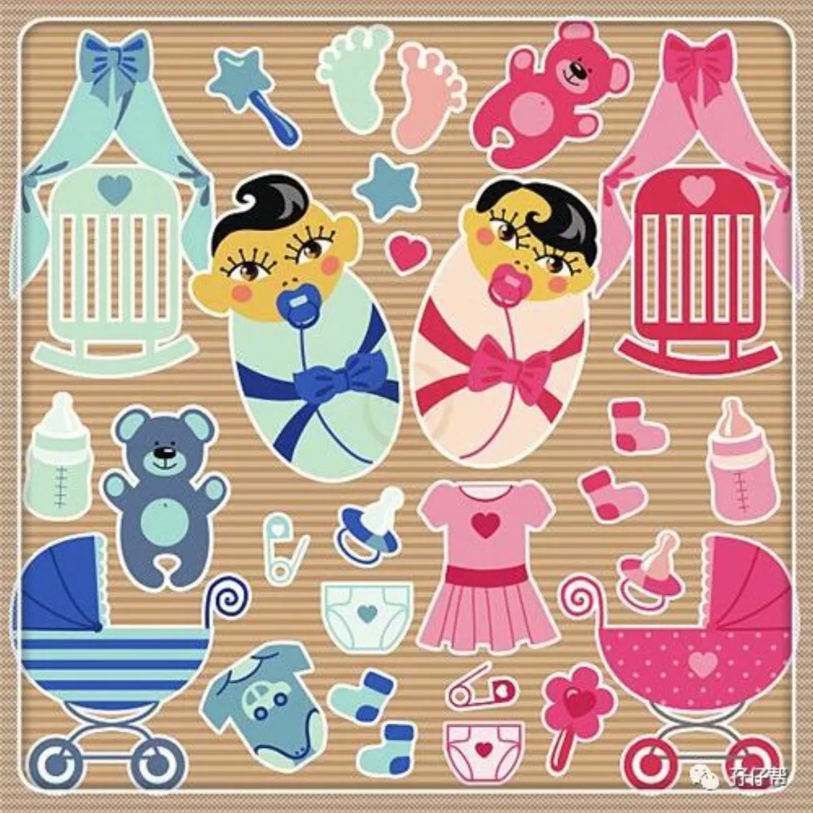
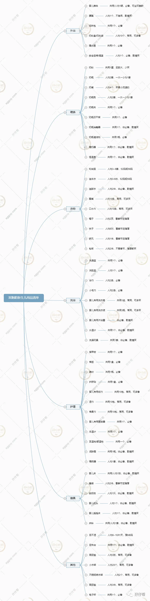
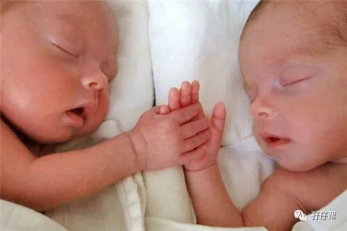
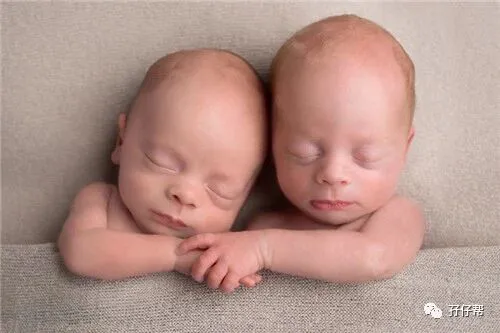
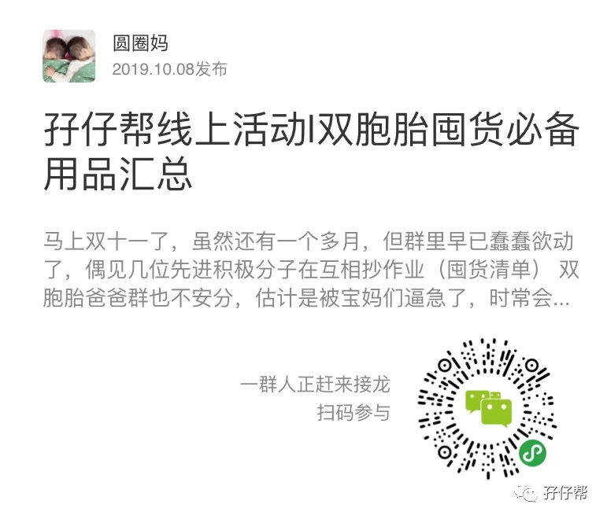

文|圆圈妈
图|来自网络，侵删
不知道谁下了一个咒语：
躲得过初1，躲不过双11
这篇推文来教你怎么躲！
如果你是双胞胎准父母，宝宝们即将出生，还不知道买什么，面对双11每天轰炸式的广告，你无路可走，买了觉得套路，不买觉得错过了几个亿，那么请看这篇。
注意，这份囤货清单仅适用于新手双胞胎父母给双胞胎新生儿准备日常用品时参考，不适合学霸级别，号称种草达人的牛妈奶爸阅读（都已成精何须取经）
先上一个思维导图，后面有解析，还有点长，人均阅读耗时15分钟！
公众号输入“囤货”
获取清晰版本的双胞胎新生儿用品清思维导图
喂养用品
ℹ奶粉
请不必因怕奶水不够宝宝们喝而多囤奶粉！众多正能量的喂奶事迹表明，大多数双胞胎妈妈都能顺利开奶并满足到两个初生宝宝的口粮需求，要相信大自然赋予女性两个乳房产奶是有原因的哈！（比如生了对双胞胎）
其次，要考虑的是该品牌奶粉宝宝们肯喝吗？肠胃是否耐受？正如买尿不湿先买试用装一样，囤奶粉也少囤一点，先买小盒装试试，看效果再决定是否多买！
因为美素有小盒装，所以我就买了，觉得他们喝了没啥事，马上就让有商务签的圆圈大姨在香港开启疯狂买奶粉的模式！
ℹ奶瓶
若是母乳喂养，囤4个奶瓶，若是玻璃奶瓶，还要在4个奶瓶的基础上多囤2个。
玻璃奶瓶易洗刷，导热快，散热快，坏处就是容易摔碎，有点重，外出携带不方便，可囤2个PPSU材质的奶瓶备用。
强烈建议双胞胎的奶瓶同款式，不一样颜色，不要买完全一模一样！
奶瓶选择详情请参考这篇《10个妈妈8个晕，双胞胎宝宝的奶瓶奶嘴选好了吗》
至于PPSU奶瓶要不要多备呢？
如果你有心仪的品牌，而且价格确实很优惠，那买呗！因为总会用的上！当双胞胎宝宝喝奶不老实，老是要抢你的奶瓶时，你就要及时换成带手柄的PPSU材质的奶瓶了！一来让他们练习抓握，锻炼精细动作，二来你也不用担心奶瓶被摔坏！
ℹ奶嘴
除了配套奶瓶自带的奶嘴，还要准备4个最小流速的，不必提前囤中号，因为零散的东西囤太多，你很容易想不起来你到底买了还是没买，倒不如差不多觉得要换奶嘴了再去买也不迟！
当然，你要提前囤也没关系，前提是你要记得你把奶嘴放哪里了哈！
就在前几天大扫除，我居然在抽屉里找到10个全新未拆封的S号奶嘴！那一瞬间，好希望自己穿越回去把S号用完再回来！
ℹ奶瓶刷
平时共用一个奶瓶刷清洗，若是其中一个感冒，则分开清洗，因此建议买两套备用，颜色不一样便于区分，材质方面选尼龙，洗得干净些，也方便保管，海绵不易晾干，易滋生细菌。
ℹ奶瓶夹
选长柄，耐高温，防滑，防烫，关键是质量要好，可别放沸水里就融掉了！
ℹ奶瓶沥干架
如果没有买奶瓶消毒器，买个奶瓶沥干架非常有必要，把消毒过的奶瓶奶嘴倒扣放在沥干架上，避免潮湿，有效防止细菌滋生。
ℹ消毒器
消毒烘干一体化，奶瓶，奶嘴，吸奶器，奶粉盒等用品几乎均适用，若人手不足，又不差钱，买一个奶瓶消毒器放那也没关系，总有用武之地。
至于哪个品牌，仔细看市面上的奶瓶消毒器功能上几乎都是大同小异，不需要追求品牌至上，安全性能上可满足基本需求就行了，越简单越好！
我给奶瓶消毒办法很原始，买了两个铝锅，烧开水，放入奶瓶，开水煮5分钟左右捞起来放在沥干架上，主要是为了省钱，其实也不见得很省钱，还要每天清洗，耗时耗力，还有可能烧干锅，所以若你没有耐心，不够坚持每天烧水煮奶瓶，那还是花钱买个方便吧！
ℹ奶瓶清洁剂
应该没有人会用洗洁精洗奶瓶吧！NUK 的奶瓶清洁剂温和没味道，挤一点点就很多泡泡，也易冲洗，推荐哈！
ℹ暖奶器
考虑到母乳冷冻后需要加热，又不能用微波炉也不能用火加热，倘若计划母乳长一些，买个暖奶器可以省事很多，但如果是配方奶喂养，可买可不买。
圆圈经常吃着奶就睡了，剩下大半瓶，倘若一个小时内醒来了，我会把剩下的奶用开水烫一会儿，差不多温度了，继续喂他们喝，此处再次证明了玻璃奶瓶在双胞胎新生儿阶段的重要性，导热快！
ℹ恒温壶
很多妈妈种草了恒温壶，据说很好用，我也是被安利了，就买了一款，结果并没有多大用处，我时常怀疑那40°C的水到底烧开了没，纠结多次后，就干脆不保温了，最后就当普通烧水壶用了！
如果不想买恒温壶又想快速冲调奶粉，可以这样做：准备一个玻璃温水壶+一个保温壶，把奶瓶清洗晾干的同时，就把下一顿奶的温水开水准备好，坚持如一，养成习惯，顺手后就会觉得冲调奶粉SO EASY。
衣物用品
ℹ和尚服，连体衣，连脚衣
如果不想一整天到晚都在给双胞胎换衣服，那就怎么穿脱方便怎么来！市面上新生儿的衣物有很多种，如果已经挑花眼了，你就只从方便穿脱来考虑：按扣款最方便，其次绑带款，纽扣款次之。
我最开始囤的是纽扣上衣，小小的纽扣配上我肥厚的大手，我和宝宝们都太难了！每次给他们换衣服，我就忙出一身汗，后面买了绑带款的开襟上衣，好使多了，再后面买了包屁衣，瞬间觉得“相见恨晚”！
强烈建议开襟式连体衣，扣子解开就可以换尿不湿，宝宝穿着也不会勒腰！怎一个舒适了得！
长袖还是短袖看季节定薄厚，自己掐下预产期，然后往前推一个月，码数选52或59，主要看双胞胎的出生情况，如早产较早，体重和身长较小，自然是买52的比较合适。
至于连脚衣，我觉得纯粹是来捣乱的，谁用谁想哭！给宝宝们穿宽松舒适的小衣服后再搭配一双纯棉小袜子不知道多方便，多可爱。
ℹ围嘴
使用频率较高，可适当多囤一些，注意尺寸，别指望买大尺寸可以用到1岁甚至更久，小围嘴基本上使用几次就会扔掉的啦。
ℹ口水巾
用处多，拍嗝时放在大人的肩膀，喂奶时垫在宝宝的下巴，睡觉时放在宝宝的后背擦汗…可适当多备，材质选纯棉透气吸汗即可！
ℹ帽子，袜子，披风
看季节选厚薄以及地方风俗，因为有些风俗要求小婴儿不管天气多热都要戴帽子护住脑门，这个看各自需求哈。
感觉新生儿的袜子好难买，浅口的容易滑落，中长筒的容易勒….当妈的太难了！
披风要不要买最好问地理位置和气候，我买了两件披风，想着出去打预防针用的上，结果就是当时三伏天只需要一把太阳伞就行！最后这两件披风还没有隆重登场就被压箱底了。
ℹ包被
厚薄都要准备，夏季大多数情况吹空调，室温通常控制得较低，冬天就更不用说啦！此外薄包被还可以用来安抚小婴儿，把他们轻轻裹起来模拟子宫环境，抱他们在怀里，可以很快安静下来，特别适用于没有安全感的宝宝。
洗浴用品
ℹ澡盆
有准妈妈问我双胞胎是不是要一起洗澡，那澡盆要买多大？我的回答是这样的：澡盆买多大，长的还是圆的，主要问下家里的浴室有多大多宽。
双胞胎新生儿一般不在一起洗澡，通常都是洗完一个轮到下一个，所以澡盆要买多大不用问双胞胎宝宝们的意见！
我买的是长款，考虑到他们稍大一点可以坐在里面一起洗，那是个很普通的澡盆一直用到3岁，承载着许多他们哥俩一起嬉笑怒骂的洗澡时光！
ℹ脸盆
一个洗脸用，一个擦屁屁用！为避免混用，可选不同款式，如塑料盆用于洗脸，不锈钢脸盆用于擦屁屁，双胞胎之间就不需要额外分脸盆了，共用也无妨！
ℹ浴巾
浴巾的用处还挺多的，洗完澡用来擦身，夏天室内开空调当小被子，对折后还能当包被使用…买纯棉易吸水的即可！
ℹ小毛巾
小毛巾主要用于洗澡，洗脸，洗PP，注意要买不同款式不同颜色，便于区分，因为你肯定会跟我一样，经常搞混，会把擦PP的小毛巾给他们擦脸。
你可以这样操作：擦PP的冷色调，大尺寸，擦脸用的暖色调，小尺寸，如果你还是弄错了，那只能说明你孕傻程度非同小可！
ℹ婴儿专用洗衣皂，洗衣液
易耗品，可以用很久，又不担心保质期，若看着价格的确优惠，可放心大胆地多囤！
ℹ沐浴露
可用可不用，如非要用，最好是等满百天后，酌情使用。
ℹ水温计
仅适合新手父母，刚开始没经验用一下，基本上到后面就凭感觉用手稍微试探下温度就知道合不合适了。
ℹ洗澡玩具
建议等他们稍大一点，会坐在一起洗澡了，放个小玩具烘托下洗澡气氛就行了！新生儿时期的他们对玩具没有概念，你在水里放什么基本都是浪费表情。
我能想到的用处就是，当你想与宝宝们进行母婴交流但又苦于不知道说什么时，洗澡玩具是个不错的道具！
护理用品
ℹ指甲钳
买过两种品牌的婴儿专用指甲钳都不好用，总是觉得不顺手，最后用成人常用款，市面上有婴儿指甲钳套装，包含镊子，锉刀，耳勺等，基本上用处不大，只需要买指甲钳就行了！
ℹ棉签，碘伏，护脐贴
主要用于新生儿的脐带护理，一般出院时医院会配药，脐带大概出生后3—7天就脱落，护脐贴买一盒就差不多了，用不了多少，也用不了多久。
圆圈在医院呆了11天，接回家时，脐带已经愈合结痂了，直接跳过脐带护理这一环节。群里妈妈们的建议是，护脐贴很有必要，可保持脐部干燥，不被尿布或者其他物品弄湿。
ℹ婴儿专用纸巾
纸巾的用处很大，擦口水，鼻涕，奶渍…因与宝宝亲密接触，纸巾要求质量一定要好。属易耗品，可适当多买，别担心你使用纸巾的频率，绝不会比你看手机的机会少！
我贪便宜买的*达，*风…很多纸屑，害他们经常打喷嚏。
ℹ湿巾
消耗品，可适当多囤货，不管买什么品牌，请记得大包装和小包装都要备一些，为避免不必要的思想纠结，担心搞混，买那种擦pp擦手口都能用的！
ℹ棉柔巾
其实我没有用过柔湿巾，不知道跟湿巾有啥区别，某天看到群里一妈妈的分享说可以沾温水，给宝宝擦屁屁用，擦完就扔掉，非常方便！
我想到以前每次圆圈在家拉臭臭，我们都是端来一盆温水给他们擦洗，很耗人工，才发现用对了神器真的省事不少。
如果介意湿巾的成分，担心对宝宝娇嫩的皮肤刺激大，不安全，可用棉柔巾，湿水不易破，干擦湿擦都舒服。
ℹ喂药器
喂药器买了两种款式，一种滴管式，一种是注射式，经过多次验证，圆圈比较接受滴管式，把药滴入口腔壁，缓缓流入咽部，可以防呛。
其实不管用哪一种喂药方式都觉得很罪过，但愿你们用不上，但还是备一个吧，小宝宝头疼脑热常有的事。
ℹ体温计
虽然都建议给小婴儿用电子体温计，但不知是不是心理作用，总觉得水银温度计比较靠谱！我摔坏了3只水银温度计之后，买了电子体温计，然后买了额温枪，接着又买了耳温枪，最后又买了10只水银温度计（做好摔碎的准备）一直用到现在。
使用时可看情况，若宝宝配合，就用水银温度计，若实在闹得慌，先用耳温枪摸个大概，心里有数！
ℹ婴儿专用理发器
与猪肉一样贵的是，给小婴儿剪头发！一次30—50元不等！两个100块，关键是仅仅刮了几根头发而已！还要担心小宝宝可能会被千万人共用的剪刀不小心剪到。
所幸，这笔钱，我省下来了，这份担心也从来没有过，买个婴儿专用理发器就可以了，简单易上手。
给圆圈剪头发一直是队友的拿手绝活，从小婴儿练起，刚开始会有点怕，那可是自己亲生的呀，慢慢熟练了就会顺手多了，现在队友的理发技术提高了不少，还能DIY发明一些小正太的新发型！
ℹ润肤霜
如果双胞胎出生在冬季，新生儿皮肤娇嫩，可准备润肤霜，只是涂脸上，薄薄的一层就行，那些身体乳之类的就免了吧！
圆圈6个月才开始用郁美净儿童霜，人称“香香”，经典国货，便宜好用，保湿效果好，最主要是便宜，20块钱一大盒。
寝具用品
ℹ婴儿床
这个非常讲究各自家庭的人员分配问题，详情请参考这篇《刚刚又有双胞胎妈妈问孖仔帮：婴儿床要不要买？》
插播一则广告|近日孖仔帮会出婴儿床的团购活动，敬请期待哈！
ℹ婴儿定型枕
婴儿最好还是去枕平卧，越简单越好，画蛇添足犯不着，还有你担心的头型问题，其实也不必太焦虑！用了定型枕，头型未必好看，还可能有窒息风险，不用定型枕，头型未必不好看，还可能长得更好！
我买了两个小枕头，但用处不大，不如用一块毛巾对折当枕头，而且圆圈喜欢趴着睡，我们担心会导致窒息，就把枕头撤掉了。
ℹ睡袋
分腿分袖款式，群里的妈妈推荐蘑菇睡袋。
因为当时是夏季，没有准备睡袋，晚上睡觉也只是盖了层薄薄的包被，到了冬季睡袋才派上用场，终于不用半夜起床给他们掖被子了！
ℹ费雪安睡海马
其实不赞成小婴儿用这种安抚物，我觉得会干扰他们后期的睡眠训练，广告说可以安抚宝宝睡觉，减少夜哭…实际上呢？小宝宝会靠自己的力量去适应这个新环境，我们还是稍安勿躁吧！
ℹ音乐床铃
这个非必备，新生儿时期的双胞胎宝宝还看不懂这玩意儿，可能要到第二个月开始才会对这些五颜六色动来动去的小东西有反应，所以按需购买哈！
外出用品
ℹ安全座椅/提篮
让双胞胎上车就规规矩矩坐在安全座椅的秘诀是，从小婴儿开始就训练，大人也要养成习惯，不要舍不得放手！车辆行驶过程中，呆在安全座椅/提篮上比在你怀抱里安全多了！
ℹ婴儿腰凳
宝宝们前三个月估计用不上腰凳，但后面的用处就很大咯，要是看到有合适的，价格又很心动，那就趁早下手吧！
我买的是好孩子，使用说明书上说满月后就可以用腰凳，考虑到圆圈是早产儿，纠正月龄满百日后，我才敢用腰凳抱着他们出门。
ℹ婴儿推车
新生儿期要准备可坐可躺款式，详情可参考这三篇：
《双十一囤货：我为什么不买并排式的双胞胎婴儿车，这篇文章有答案》
《想买品牌双胞胎婴儿车，人民币答应你了吗》
《双胞胎婴儿车的5个细节分析，助你双十一买买买不晕购物车》
ℹ妈咪包
别指望买超大号的妈咪包能装得下两宝宝的所有随身物品，实际上，你会发现即便买一个火车般容量大的妈咪包，依然不能百分百满足双胞胎宝宝的出行。
选一个分隔区多，内部多隔层设计，大小适宜的妈咪包就行了，斜跨还是双肩，按自己的喜好即可。详情可参考这篇《带着双胞胎宝宝轻松出游，你需要这样的妈咪包》
ℹ奶粉盒/奶粉袋
奶粉盒/奶粉袋是神器，奶粉袋更佳，小巧方便不占空间，用完就可以扔，省事！
其他用品
ℹ尿不湿
品牌就不说了，看测评，多比较吧，结合家庭经济能力做出选择，这里主要说下要囤多少货比较合适。
先准备两周的用量，一天人均8片左右，即一天用量是16片，那就至少需要240片，在这两周的时间观察两宝宝的实际用量，再根据实际情况继续囤货，那时候自然就心中有数了。
其次，观察下两宝宝有没有因为尿不湿导致不舒适的地方，如红屁股等，若发现有问题，就要及时更换尿不湿品牌，这也是为何不建议你囤太多尿不湿的原因！
ℹ电子称
不必要买婴儿专用的称重器，使用率不高，买一个简易轻便成人亦可用的就行，自己站上去称，抱着娃一起称，两次数据减去就得到宝宝的体重。
这个称挺有必要的，尤其是家有双胞胎早产儿，需时刻追踪他们的生长发育情况。
因为我非常在乎圆圈的体重追不上同龄宝宝，特意买个电子秤，隔一段时间就称下体重，找点安慰，来点成就感！
ℹ隔尿垫
市面上的隔尿垫有一次性用和防水可洗，要是前期没经验或人手不足，可多备点一次性的，用脏了就扔掉，后面根据实际需求买防水可洗的，大小尺寸都适当备一些，以便在不同场合使用。
这是被我严重低估的神器！
SO…我只买了两张，因为觉得他们穿尿不湿应该不需要用到隔尿垫，实际就是被我们用到极致：换尿布，洗完澡，出门旅游，放在婴儿床上预防宝宝躺着溢奶弄脏床单…只有我想不到，没有隔尿垫做不到！
ℹ小衣架
用成人衣架晾晒小婴儿的衣物实在很不搭，小衣架就显得非常重要了，也可以准备2--3个带夹子的晾衣架，记住要不锈钢的那种，晾晒小物件，如袜子，口水巾等。
圆圈妈妈有话说
要说双胞胎的用品，三天三夜都写不完，这篇只是列出了新生儿时期的双胞胎必备用品，至于双胞胎宝宝们之后的用品呢？
我敢打赌，经历过28天的轰炸，你绝对知道奶粉要囤几罐，尿不湿要买几箱，奶嘴要买哪个款式，你心里有数，基本上就可以按需购买，无需参考所谓的囤货清单，无需被双十一的商家们赶鸭子上架似的催你买买买。
我觉得双胞胎准爸爸妈妈们盲目囤货主要是不确定哪些东西用得上，哪些用不上，毕竟是新手，又是双胎，情况特殊，发现这个便宜了，那个优惠了，想想好像用得上，又担心以后涨价了，于是就入坑了！
可以理解！但你更应该理智点！先囤必备的，那些非必备的不确定的先缓缓！
当你照顾双胞胎宝宝一段时间后，有了经验就知道哪些该多买，哪些买了无卵用，带着明确的目标去买自己想要的东西，才不会被套路，才不会觉得错过几个亿！
我们总是希望育儿用品可以一步到位，但我们的需求是时刻变化着的！没有永远的育儿神器或鸡肋，用到需时任何鸡肋都有可能秒变神器！
是鸡肋还是神器，其实关键看你怎么用，用在哪里！任何用品的存在都有它的理由，就好像我们人呐，天生我材必有用一样！用对地方了，我就是天才神器！
至于你担心的东西将来涨价了，错过了优惠价，心里不平衡的问题，我再告诉你一个真相就是，现在的商家促销活动特别多，很多算下来其实都差不多，为了凑热闹囤了一大堆未必用的上的东西，占用现金流还占地方，更加划不来！
再说了，咱又不是第一次见识到双11名过其实的真面目，搞那么多预售，定金抵扣，折后满减，助力盖楼…难道你没有怀疑自己智商的冲动吗？
除非，你真的很享受这个购物过程，比如...
抢抢抢，抢到一毛钱也很开心！
挑挑挑，挑到眼花都不舍得放下手机！
凑凑凑，凑单成功感觉赚了一个亿！
盖盖盖，老娘盖的不是楼，是心情！
算算算，才知道数学老师当年的用心良苦！
砍砍砍，人品大考验，发动全村人一起砍！
收收收，一边哭，一边拆快递，依然很满足！
那好吧！祝你的钱包安好！买得开心哈！
上个月在双胞胎群里发起了群接龙，主题是双胞胎宝宝的用品汇总，收到123份数据，但实际值得参考的并不多，不知道是都忙着带娃没空还是大家都习惯等着抄作业！
因数据导出失败，就没有整理出表格了，有需要了解过来人的经验分享可扫码进入小程序看接龙结果，内有分享一些宝宝用品和品牌，值得借鉴哈！
最后告诉大家一个好消息
我2017年双十一买的湿巾终于在2019年的10月31日用完了，实在太振奋人心了！你们记得给我点赞，祝贺我成功消灭库存！
还有哪些你觉得双十一必囤的用品，留言来说说吧！方便给小白爸爸们妈妈们抄作业哈！
-END-
今日互动话题
#请晒一晒你的双11购物车吧#
评论区聊一聊呗！
一关注孖仔帮一





